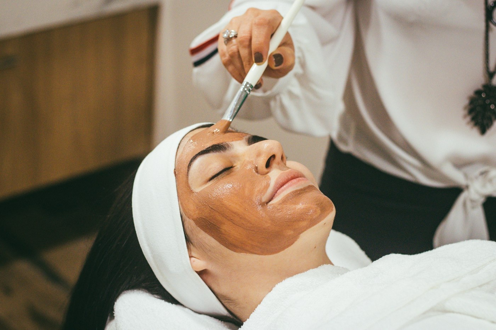
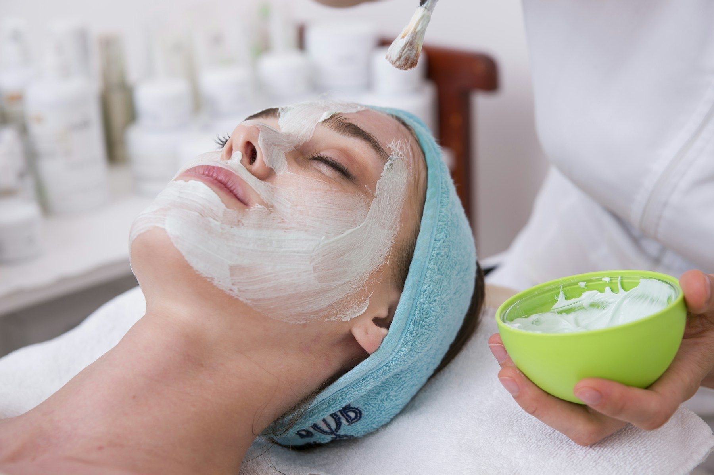
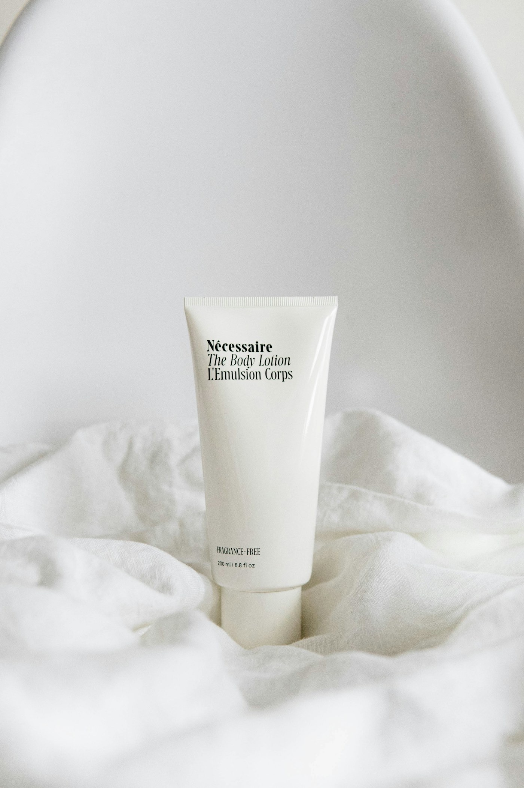
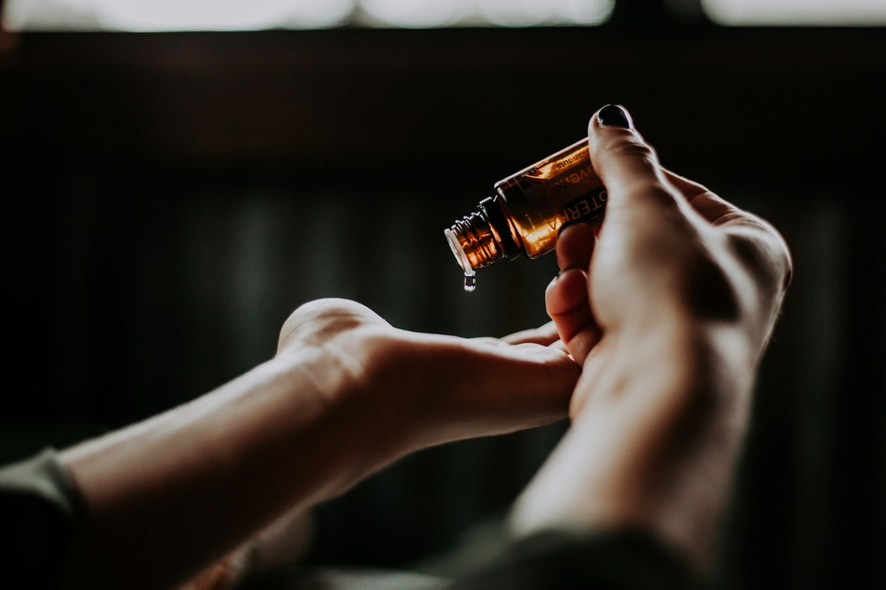
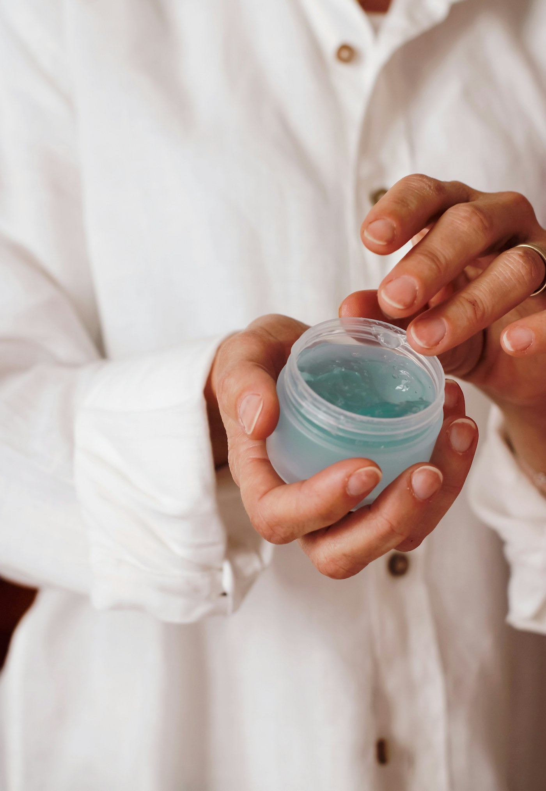
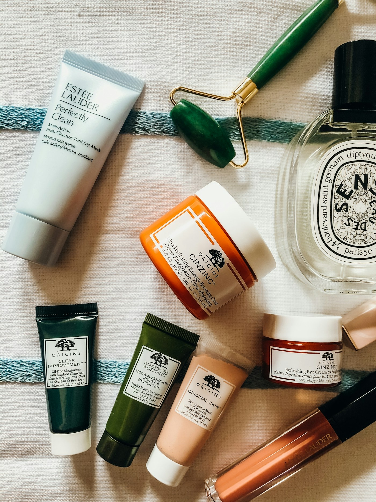

01 / Клиника
Индивидуальная косметология
Уходовые, аппаратные и инъекционные методики по показаниям.
Подробнее →Косметология · Ташкент
Деликатная косметология, профессиональные решения и индивидуальный план ухода после очной консультации.

01 — Beauty Terra
Мы объединяем клиническую косметологию, профессиональную дистрибуцию и обучение специалистов — в одной современной бьюти-экосистеме.
Наши направления →Три направления

Уходовые, аппаратные и инъекционные методики по показаниям.
Подробнее →
Препараты, косметика и оборудование для специалистов эстетической медицины.
Подробнее →Мастер-классы и разбор рабочих протоколов для косметологов.
Подробнее →Клиника
Программу и сочетание методик определяет специалист после очной консультации.
Персональные программы ухода, направленные на текстуру, увлажнённость и ухоженный вид кожи.
Деликатная работа с пропорциями и чертами лица после консультации со специалистом.
Технологичные аппаратные протоколы, подобранные с учётом запроса и особенностей кожи.
Профессиональный выбор методики и препарата исключительно по итогам очной оценки.
Любая процедура имеет показания и ограничения. Окончательное решение о возможности проведения принимает специалист на консультации.

Natural by design02 — Наш подход
«Естественный результат начинается не с процедуры, а с внимательного диалога»
Мы не работаем по универсальным схемам. Сначала специалист знакомится с вашим запросом, оценивает состояние кожи и только затем предлагает понятный, индивидуальный план.
Professional division
Для косметологов, клиник и специалистов эстетической медицины.

Профессиональная косметика для работы специалиста и продуманного домашнего ухода.
Аппаратные технологии для профессиональной косметологии.
APN 4% + NMN: работа с качеством кожи, плотностью, эластичностью, текстурой и сиянием — после консультации специалиста.
HCaHA Lido — инъекционный биостимулятор на основе гидроксиапатита кальция и гиалуроновой кислоты.
YПрофессиональные продукты для практики специалистов. Подбор и применение — согласно назначению и протоколу.
Запросить консультацию ↗Beauty Terra Academy
Практические мастер-классы и разбор рабочих протоколов для косметологов. Следить за новыми программами можно в Telegram и Instagram.

03 — Вопросы
Коротко о записи, консультациях и обучении.
Выберите удобный способ: позвоните по одному из номеров или напишите в Telegram / Instagram. Администратор поможет согласовать визит.
Специалист обсуждает ваш запрос и оценивает состояние кожи на очной консультации. Только после этого формируется индивидуальный план.
Да. Напишите команде Beauty Terra в Telegram и уточните, какое профессиональное направление вас интересует.
Анонсы образовательных программ публикуются в Telegram и Instagram Beauty Terra.
Запись на консультацию
Ташкент · Жангох, 39Расскажите о своём запросе — администратор поможет выбрать удобный формат обращения.
04 — Контакты
Ташкент, Жангох, 39
Открыть на карте ↗